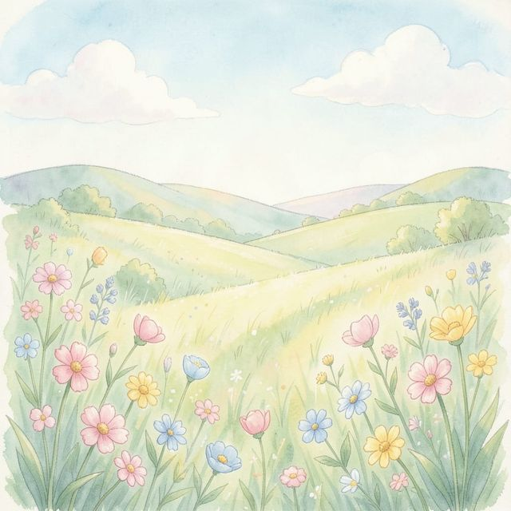
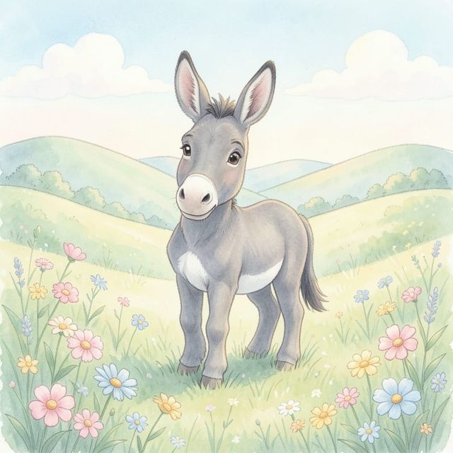
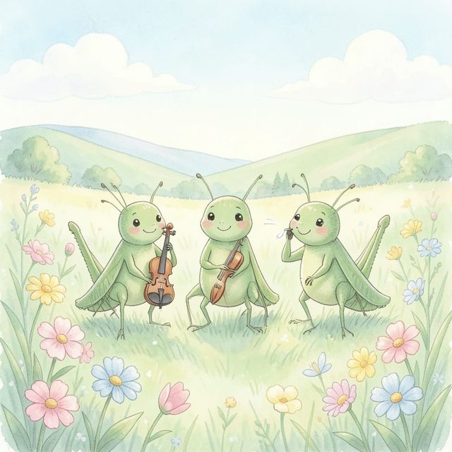
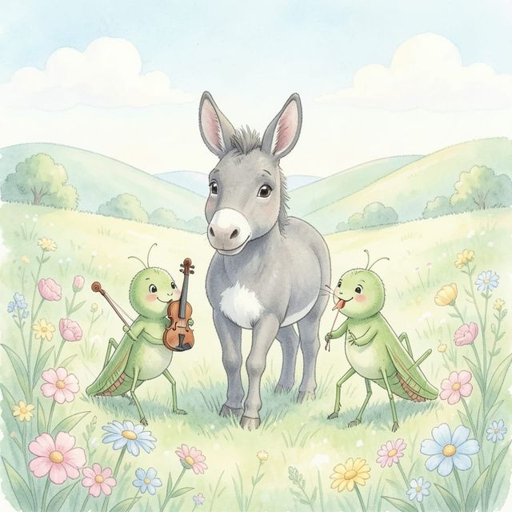
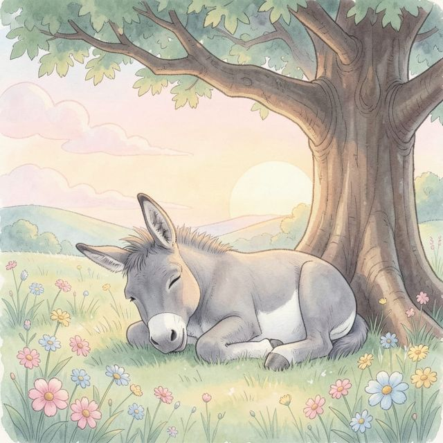

Welcome to the Meadow...

Once there was a donkey named Beppo. One day, Beppo found a meadow so full of sweet grass and bright flowers that his heart began to swell with a secret song.

🎶 Suddenly, a tiny "crick-crick" rose from the clover. Three green grasshoppers appeared, tuning their golden fiddles to match the rhythm of Beppo’s happy heart.

🎶 Beppo tilted his head back and let out a soft, musical bray. The wind whistled through the pines, and together, they played the most beautiful song the Alps had ever heard.

As the sun dipped behind the peaks, the meadow fell into a golden hush. Beppo closed his eyes, dreaming of tomorrow’s encore. The end.
Back to Library